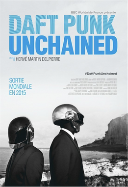

Daft Punk Unchained
Daft Punk Unchained is an Anglo-French documentary that was televised on 24 June 2015 in France and on 9 February 2016 in the UK. It documents the rise to fame and the lives of Daft Punk members Guy-Manuel de Homem-Christo and Thomas Bangalter and their pioneering influence on the electronic music scene.
The documentary runs chronologically from the early years before the foundation of Daft Punk right up to the release of the album Random Access Memories and subsequent Grammy Awards received by the duo.
The film combines rare archive footage as well as exclusive interviews with their closest collaborators who talk about their work with Daft Punk, including Pharrell Williams, Giorgio Moroder, Nile Rodgers, Skrillex, Kanye West and Michel Gondry. No new footage of Daft Punk was made for the documentary.